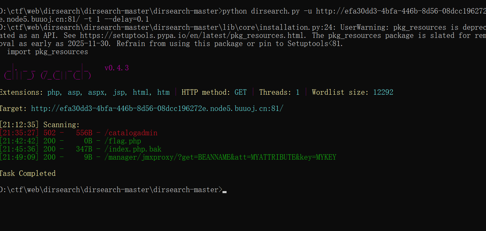
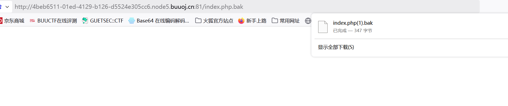

BUUCTF-Web-[ACTF2020 新生赛]BackupFile1
本文为记录个人信安小白的刷题路程，大佬勿喷，也同时希望文章能对您有所帮助
打开靶机，
提示让我们找找源文件，F12查看源码没有看到有用的信息，
使用dirsearch扫描网站

注意到index.php.bak文件
通过URL下载

代码审计
1 |
|
PHP在弱比较(==)时，会尝试将字符串转换为数字
对于”123ffwsfwefwf24r2f32ir23jrw923rskfjwtsw54w3”，PHP会取前面的数字部分”123”
所以当$key转换为整数后等于123时，比较会成立
所以直接传入赋值123的key参数
获得flag
弱比较与强比较
在PHP中，比较运算符分为松散比较(弱比较，==)和严格比较(强比较，===)，它们在比较时的行为有显著差异。
弱比较（松散比较）
松散比较只比较值是否相等，会进行类型转换。
特点：
1.如果比较的两个值类型不同，PHP会尝试将它们转换为相同类型后再比较
2.转换规则遵循PHP的类型转换规则
3.可能导致意外的比较结果
1 | 123 == "123" // true (字符串转换为数字) |
强比较（严格比较）
严格比较同时比较值和类型。
特点：
1.只有当值和类型都相同时才返回true
2.不进行任何类型转换
3.更安全、更可预测
1 | 123 === "123" // false (数字 vs 字符串) |
本博客所有文章除特别声明外，均采用 CC BY-NC-SA 4.0 许可协议。转载请注明来源 半枫！